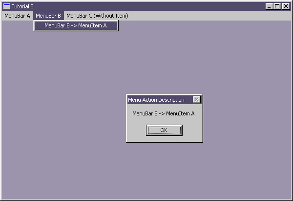

| Sulaiman Chang Personal Website |
|
Tutorial 8 : Menu
format PE GUI 4.0
entry start
include '%fasminc%\win32a.inc'
section '.data' data readable writeable
wHMain dd ?
wHInstance dd ?
wTitle db 'Tutorial 8',0
wClsName db 'TUT08',0
wMsg MSG
wCls WNDCLASS
expBoxTitle db 'Menu Action Description',0
expBoxDesc11 db 'MenuBar A -> MenuItem A',0
expBoxDesc12 db 'MenuBar A -> MenuItem B',0
expBoxDesc13 db 'MenuBar A -> MenuItem C',0
expBoxDesc21 db 'MenuBar B -> MenuItem A',0
expBoxDesc30 db 'MenuBar C (Without Item)',0
section '.code' code readable executable
start:
; +------------------------------+
; | registering the window class |
; +------------------------------+
invoke GetModuleHandle,NULL
mov [wHInstance],eax
mov [wCls.hInstance],eax
mov [wCls.style],CS_HREDRAW or CS_VREDRAW
mov [wCls.lpfnWndProc],window_procedure
mov [wCls.lpszClassName],wClsName
mov [wCls.hbrBackground],COLOR_WINDOW+1
invoke LoadIcon,NULL,IDI_APPLICATION
mov [wCls.hIcon],eax
invoke LoadCursor,NULL,IDC_ARROW
mov [wCls.hCursor],eax
invoke RegisterClass,wCls
invoke LoadMenu,[wHInstance],30
; +--------------------------+
; | creating the main window |
; +--------------------------+
invoke CreateWindowEx,\
0,\
wClsName,\
wTitle,\
WS_OVERLAPPEDWINDOW,\
CW_USEDEFAULT,\
CW_USEDEFAULT,\
CW_USEDEFAULT,\
CW_USEDEFAULT,\
NULL,\
eax,\
[wHInstance],\
NULL
mov [wHMain],eax
invoke ShowWindow,[wHMain],SW_SHOW
; +---------------------------+
; | entering the message loop |
; +---------------------------+
window_message_loop_start:
invoke GetMessage,wMsg,NULL,0,0
or eax,eax
je window_message_loop_end
invoke TranslateMessage,wMsg
invoke DispatchMessage,wMsg
jmp window_message_loop_start
window_message_loop_end:
invoke ExitProcess,0
; +----------------------+
; | the window procedure |
; +----------------------+
proc window_procedure,hWnd,uMsg,wParam,lParam
push ebx esi edi ;eventhough the API would preserved, but play safe :p
cmp [uMsg],WM_COMMAND
je wmCOMMAND
cmp [uMsg],WM_DESTROY
je wmDESTROY
wmDEFAULT:
invoke DefWindowProc,[hWnd],[uMsg],[wParam],[lParam]
jmp wmBYE
wmCOMMAND:
mov eax,[wParam]
cmp ax,11
je wmCOMMAND_11
cmp ax,12
je wmCOMMAND_12
cmp ax,13
je wmCOMMAND_13
cmp ax,21
je wmCOMMAND_21
cmp ax,30
je wmCOMMAND_30
jmp wmDEFAULT
wmCOMMAND_11:
invoke MessageBox,[hWnd],expBoxDesc11,expBoxTitle,MB_OK
jmp wmBYE
wmCOMMAND_12:
invoke MessageBox,[hWnd],expBoxDesc12,expBoxTitle,MB_OK
jmp wmBYE
wmCOMMAND_13:
invoke MessageBox,[hWnd],expBoxDesc13,expBoxTitle,MB_OK
jmp wmBYE
wmCOMMAND_21:
invoke MessageBox,[hWnd],expBoxDesc21,expBoxTitle,MB_OK
jmp wmBYE
wmCOMMAND_30:
invoke MessageBox,[hWnd],expBoxDesc30,expBoxTitle,MB_OK
jmp wmBYE
wmDESTROY:
invoke PostQuitMessage,0
wmBYE:
pop edi esi ebx
return
endp
section '.idata' import data readable writeable
library KERNEL32, 'KERNEL32.DLL',\
USER32, 'USER32.DLL'
import KERNEL32,\
GetModuleHandle, 'GetModuleHandleA',\
ExitProcess, 'ExitProcess'
import USER32,\
RegisterClass, 'RegisterClassA',\
CreateWindowEx, 'CreateWindowExA',\
DefWindowProc, 'DefWindowProcA',\
ShowWindow, 'ShowWindow',\
LoadCursor, 'LoadCursorA',\
LoadIcon, 'LoadIconA',\
LoadMenu, 'LoadMenuA',\
GetMessage, 'GetMessageA',\
MessageBox, 'MessageBoxA',\
TranslateMessage, 'TranslateMessage',\
DispatchMessage, 'DispatchMessageA',\
PostQuitMessage, 'PostQuitMessage'
section '.rsrc' resource data readable
directory RT_MENU,appMenu
resource appMenu,\
30,LANG_ENGLISH,menuMain
menu menuMain
menuitem 'MenuBar A',10,MFR_POPUP
menuitem 'MenuBar A -> MenuItem A',11,MFT_STRING
menuitem 'MenuBar A -> MenuItem B',12,MFT_STRING
menuseparator
menuitem 'MenuBar A -> MenuItem C',13,MFR_END
menuitem 'MenuBar B',20,MFR_POPUP
menuitem 'MenuBar B -> MenuItem A',21,MFR_END
menuitem 'MenuBar C (Without Item)',30,MFR_END
Result : Somehow usefull information /* ;win40 -- A lot of MF_* flags have been renamed as MFT_* and MFS_* flags */ /* * Menu flags for Add/Check/EnableMenuItem() */ #define MF_INSERT 0x00000000L #define MF_CHANGE 0x00000080L #define MF_APPEND 0x00000100L #define MF_DELETE 0x00000200L #define MF_REMOVE 0x00001000L #define MF_BYCOMMAND 0x00000000L #define MF_BYPOSITION 0x00000400L #define MF_SEPARATOR 0x00000800L #define MF_ENABLED 0x00000000L #define MF_GRAYED 0x00000001L #define MF_DISABLED 0x00000002L #define MF_UNCHECKED 0x00000000L #define MF_CHECKED 0x00000008L #define MF_USECHECKBITMAPS 0x00000200L #define MF_STRING 0x00000000L #define MF_BITMAP 0x00000004L #define MF_OWNERDRAW 0x00000100L #define MF_POPUP 0x00000010L #define MF_MENUBARBREAK 0x00000020L #define MF_MENUBREAK 0x00000040L #define MF_UNHILITE 0x00000000L #define MF_HILITE 0x00000080L #if(WINVER >= 0x0400) #define MF_DEFAULT 0x00001000L #endif /* WINVER >= 0x0400 */ #define MF_SYSMENU 0x00002000L #define MF_HELP 0x00004000L #if(WINVER >= 0x0400) #define MF_RIGHTJUSTIFY 0x00004000L #endif /* WINVER >= 0x0400 */ #define MF_MOUSESELECT 0x00008000L #if(WINVER >= 0x0400) #define MF_END 0x00000080L /* Obsolete -- only used by old RES files */ #endif /* WINVER >= 0x0400 */ #if(WINVER >= 0x0400) #define MFT_STRING MF_STRING #define MFT_BITMAP MF_BITMAP #define MFT_MENUBARBREAK MF_MENUBARBREAK #define MFT_MENUBREAK MF_MENUBREAK #define MFT_OWNERDRAW MF_OWNERDRAW #define MFT_RADIOCHECK 0x00000200L #define MFT_SEPARATOR MF_SEPARATOR #define MFT_RIGHTORDER 0x00002000L #define MFT_RIGHTJUSTIFY MF_RIGHTJUSTIFY /* Menu flags for Add/Check/EnableMenuItem() */ #define MFS_GRAYED 0x00000003L #define MFS_DISABLED MFS_GRAYED #define MFS_CHECKED MF_CHECKED #define MFS_HILITE MF_HILITE #define MFS_ENABLED MF_ENABLED #define MFS_UNCHECKED MF_UNCHECKED #define MFS_UNHILITE MF_UNHILITE #define MFS_DEFAULT MF_DEFAULT #endif /* WINVER >= 0x0400 */ |
| Copyright © 2004 Sulaiman Chang. All Rights Reserved. |